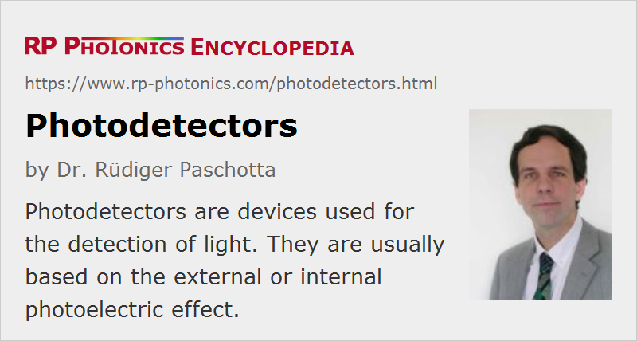

Photodetectors
Definition: devices used for the detection of light
Alternative term: light detectors
More general term: light detectors
More specific terms: infrared detectors, position-sensitive detectors, photodiodes, phototransistors, metal–semiconductor–metal photodetectors, velocity-matched photodetectors, photomultipliers, pyroelectric detectors, photoconductive detectors, photoemissive detectors, solar-blind photodetectors
Opposite terms: thermal detectors
German: Photodetektoren, Lichtdetektoren
Categories: photonic devices, light detection and characterization, optoelectronics
How to cite the article; suggest additional literature
Author: Dr. Rüdiger Paschotta
Photodetectors are devices used for the detection of light – in most cases of optical powers. More specifically, photodetectors are usually understood as photon detectors, which in some way utilize the photo-excitation of electric carriers; thermal detectors are then not included by the term, and are also not treated in this article.
Photodetectors usually deliver an electronic output signal – for example, a voltage or electric current which is proportional to the incident optical power. They are thus belonging to the area of optoelectronics.
Types of Photodetectors
As the requirements for applications (see below) vary considerably, there are many types of photodetectors which may be appropriate in a particular case:
- Photodiodes are semiconductor devices with a p–n junction or p–i–n structure (i = intrinsic material) (→ p–i–n photodiodes), where light is absorbed in a depletion region and generates a photocurrent. Such devices can be very compact, fast, highly linear, and exhibit a high quantum efficiency (i.e., generate nearly one electron per incident photon) and a high dynamic range, provided that they are operated in combination with suitable electronics. A particularly sensitive type is that of avalanche photodiodes, which are sometimes used even for photon counting.
- Metal–semiconductor–metal (MSM) photodetectors contain two Schottky contacts instead of a p–n junction. They are potentially faster than photodiodes, with bandwidths up to hundreds of gigahertz.
- Phototransistors are similar to photodiodes, but exploit internal amplification of the photocurrent. They are less frequently used than photodiodes.
- Photoconductive detectors are also based on certain semiconductors, e.g. cadmium sulfide (CdS). They are cheaper than photodiodes, but they are fairly slow, are not very sensitive, and exhibit a nonlinear response. On the other hand, they can respond to long-wavelength infrared light.
- Phototubes are vacuum tubes or gas-filled tubes where the photoelectric effect is exploited (→ photoemissive detectors).
- Photomultipliers are a special kind of phototubes, based on vacuum tubes. They can exhibit the combination of an extremely high sensitivity (even for photon counting) with a high speed and large active area. Some of them are based on multichannel plates; they can be substantially more compact than traditional photomultipliers.
- Research is performed on novel photodetectors based on carbon nanotubes (CNT) and graphene, which can offer a very broad wavelength range and a very fast response. Ways for integrating such devices into optoelectronic chips are explored.
These devices are all based on the internal or external photoelectric effect; photoemissive detectors belong to the latter category.
Various kinds of photodetectors can be integrated into devices like power meters and optical power monitors. Others can be made in the form of large two-dimensional arrays, e.g. for imaging applications. They may be called focal plane arrays. For example, there are CCD and CMOS sensors which are used mainly in cameras.
See also the article on terahertz detectors.
Important Properties of Photodetectors
Depending on the application, a photodetector has to fulfill various requirements:
- It must be sensitive in some given spectral region (range of optical wavelengths). In some cases, the responsivity should be constant or at least well defined within some wavelength range. It can also be important to have zero response in some other wavelength range; an example are solar-blind photodetectors, being sensitive only to short-wavelength ultraviolet light but not to sun light.
- The detector must be suitable for some range of optical powers. The maximum detected power can be limited e.g. by damage issues or by a nonlinear response, whereas the minimum power is normally determined by noise. The magnitude of the dynamic range (typically specified as the ratio of maximum and minimum detectable power, e.g. in decibels) is often most important. Some detectors (e.g. photodiodes) can exhibit high linearity over a dynamic range of more than 70 dB.
- In some cases, not only a high responsivity, but also a high quantum efficiency is important, as otherwise additional quantum noise is introduced. This applies e.g. to the detection of squeezed states of light, and also affects the photon detection probability of single-photon detectors.
- The active area of a detector can be important e.g. when working with strongly divergent beams from laser diodes. For light sources with very high and/or non-constant beam divergence, it is hardly possible to get all the light onto the active area. An integrating sphere may then be used (with appropriate calibration) for measuring the total power.
- The detection bandwidth may begin at 0 Hz or some finite frequency (for AC-coupled detectors), and ends at some maximum frequency which may be limited by internal processes (e.g. the speed of electric carriers in a semiconductor material) or by the involved electronics (e.g. introducing some RC time constants). Some resonant detectors operate only in a narrow frequency range, and can be suitable e.g. for lock-in detection.
- Some detectors (such as pyroelectric detectors) are suitable only for detecting pulses, not for continuous-wave light.
- For detecting pulses (possibly on a few-photon level), the timing precision may be of interest. Some detectors have a certain “dead time” after the detection of a pulse, where they are not sensitive.
- Different types of detectors require more or less complex electronics. Penalties in terms of size and cost may result e.g. from the requirement of applying a high voltage or detecting extremely small voltages.
- Particularly some mid-infrared detectors need to be cooled to fairly low temperatures. This makes their use under various circumstances impractical.
- For some applications, one-dimensional or two-dimensional photodetector arrays are needed – most often in the form of photodiode arrays. For detector arrays, some different aspects come into play, such as cross-pixel interference and read-out techniques.
- Finally, the size, robustness and cost are essential for many applications.
Different detector types, as listed above, differ very much in many of these properties. In typical application scenarios, some requirements totally rule out the use of certain detector types, and quickly lead to a fairly limited choice. Note also that there are some typical trade-offs. For example, it is frequently difficult to combine a high detection bandwidth with a high sensitivity.
Applications of Photodetectors
Photodetectors have a very wide range of applications. Some examples:
- In radiometry and photometry, they can be used for measuring properties like optical power, luminous flux, optical intensity and irradiance, in conjunction with additional means also for properties like the radiance.
- They are used to measure optical powers e.g. in spectrometers, light barriers, optical data storage devices, autocorrelators, beam profilers, fluorescence microscopes, interferometers and various types of optical sensors.
- Particularly sensitive photodetectors are required for laser rangefinders, LIDAR, quantum optics experiments and night vision devices.
- Particularly fast photodetectors are used for optical fiber communications, optical frequency metrology and for the characterization of pulsed lasers or laser noise.
- Mostly two-dimensional arrays containing many identical photodetectors are used as focal plane arrays, mostly for imaging applications. For example, most cameras contain such devices as image sensors.
Suppliers
The RP Photonics Buyer's Guide contains 101 suppliers for photodetectors. Among them:
Questions and Comments from Users
Here you can submit questions and comments. As far as they get accepted by the author, they will appear above this paragraph together with the author’s answer. The author will decide on acceptance based on certain criteria. Essentially, the issue must be of sufficiently broad interest.
Please do not enter personal data here; we would otherwise delete it soon. (See also our privacy declaration.) If you wish to receive personal feedback or consultancy from the author, please contact him e.g. via e-mail.
By submitting the information, you give your consent to the potential publication of your inputs on our website according to our rules. (If you later retract your consent, we will delete those inputs.) As your inputs are first reviewed by the author, they may be published with some delay.
See also: photoelectric effect, photoemissive detectors, photocurrent, photodiodes, p–i–n photodiodes, avalanche photodiodes, phototransistors, metal–semiconductor–metal photodetectors, velocity-matched photodetectors, phototubes, photomultipliers, photodiode arrays, optical power meters, optical power monitors, photon counting, noise specifications, noise-equivalent power, responsivity, thermal detectors, terahertz detectors, solar-blind photodetectors
and other articles in the categories photonic devices, light detection and characterization, optoelectronics
|  |
If you like this page, please share the link with your friends and colleagues, e.g. via social media:
These sharing buttons are implemented in a privacy-friendly way!